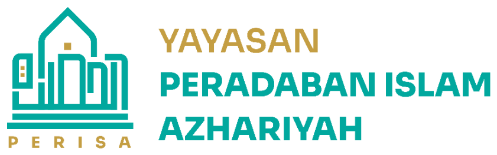

Verifikasi Keaslian Sertifikat
Yayasan Peradaban Islam Azhariyah — Asuhan Umi Elly
Memeriksa…
Kode verifikasi tidak ditemukan, atau sertifikatnya belum/tidak pernah diterbitkan oleh yayasan. Kalau menurut Anda ini keliru, hubungi pengurus Yayasan Peradaban Islam Azhariyah.
Pemeriksaan tidak bisa diselesaikan — kemungkinan koneksi internet terputus. Ini bukan berarti sertifikatnya palsu. Muat ulang halaman ini untuk mencoba lagi.